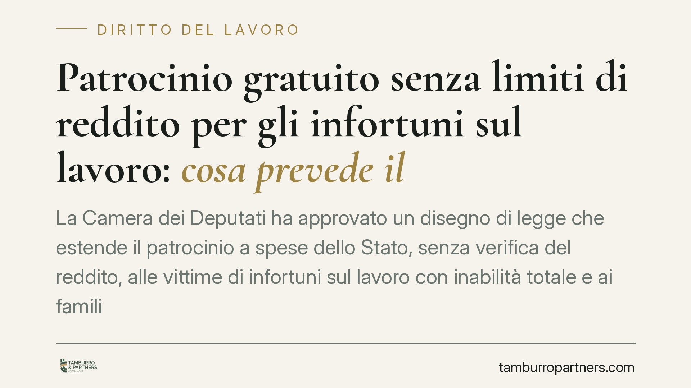

Patrocinio gratuito senza limiti di reddito per gli infortuni sul lavoro: cosa prevede il ddl
La Camera dei Deputati ha approvato un disegno di legge che estende il patrocinio a spese dello Stato, senza verifica del reddito, alle vittime di infortuni sul lavoro con inabilità totale e ai familiari dei lavoratori deceduti. Il testo passa ora al Senato: fino all'approvazione definitiva restano in vigore le soglie ordinarie. Vediamo cosa prevede e cosa comporta.

Il provvedimento
Il disegno di legge approvato dalla Camera dei Deputati interviene sul patrocinio a spese dello Stato, cioè l'istituto che consente a chi non dispone di mezzi sufficienti di difendersi in giudizio con oneri a carico dell'erario (avvocato, spese processuali, consulenze tecniche).
La novità è netta: per le vittime di infortuni sul lavoro con inabilità totale e per i familiari dei lavoratori deceduti, l'accesso al beneficio non sarebbe più condizionato dal limite di reddito. Secondo quanto riportato dalla stampa il testo ha incassato un consenso trasversale in Aula, ma il percorso non è concluso.
Attenzione: il testo non è ancora legge. Deve ora essere esaminato dal Senato e, in caso di modifiche, tornare alla Camera. Fino all'approvazione definitiva e all'entrata in vigore, valgono le regole e le soglie di reddito ordinarie.
Inquadramento normativo
La disciplina di riferimento è il D.P.R. 115/2002 (Testo unico sulle spese di giustizia). L'art. 76 fissa, in via ordinaria, il limite di reddito annuo imponibile per l'ammissione al patrocinio.
Lo stesso Testo unico prevede già alcune ipotesi di accesso a prescindere dal reddito. È il caso, ad esempio, delle persone offese dai reati di violenza di genere e di alcuni reati sessuali, ammesse al beneficio in deroga ai limiti reddituali ai sensi dell'art. 76, comma 4-ter, D.P.R. 115/2002. Il ddl si muove nella medesima logica, estendendo la deroga a una nuova categoria di soggetti particolarmente esposti.
Sul piano sostanziale, la condizione di "inabilità" rilevante per gli infortuni sul lavoro è accertata nell'ambito della tutela gestita dall'INAIL secondo il D.P.R. 1124/1965 (Testo unico sull'assicurazione obbligatoria). Il grado di menomazione e il relativo indennizzo sono definiti dalla normativa di settore e dalle tabelle vigenti; il ddl rinvia a tali valutazioni per individuare i beneficiari.
Il profilo penale e la parte civile
Gli infortuni gravi e mortali possono integrare reati: le lesioni personali colpose (art. 590 c.p.) e l'omicidio colposo (art. 589 c.p.), spesso aggravati dalla violazione delle norme antinfortunistiche.
Nel processo penale, la vittima o i familiari possono costituirsi parte civile per chiedere il risarcimento del danno direttamente nel giudizio contro il responsabile. Qui il patrocinio a spese dello Stato ha un peso concreto: consente di sostenere i costi della difesa e delle consulenze tecniche, spesso decisive per dimostrare nesso causale e responsabilità.
Il profilo civile e risarcitorio
L'indennizzo erogato dall'INAIL non copre l'intero pregiudizio subìto. Resta spazio per il cosiddetto danno differenziale, cioè la parte di danno (in particolare quello non patrimoniale e morale) non ristorata dalla prestazione assicurativa, che può essere richiesta al datore di lavoro responsabile.
Un chiarimento necessario: l'azione di regresso è un'azione dell'INAIL, che agisce nei confronti del responsabile civile per recuperare quanto erogato all'infortunato. Non va confusa con l'azione risarcitoria che spetta direttamente alla vittima o ai suoi familiari. Si tratta di due rapporti distinti, con titolari diversi.
Cosa cambia per il destinatario tipo
Se il ddl diventerà legge, il lavoratore con inabilità totale e i familiari di chi ha perso la vita sul lavoro potranno accedere alla difesa gratuita senza doversi preoccupare della capienza reddituale. È un abbattimento di una barriera economica che, oggi, può scoraggiare l'avvio delle azioni, soprattutto civili.
Fino ad allora, però, l'ammissione resta subordinata alla verifica del reddito secondo le soglie ordinarie.
Cosa fare in concreto
- Conservate ogni documentazione sull'infortunio: referti, certificato INAIL, verbali, testimonianze, documentazione sulle condizioni di lavoro.
- Verificate subito le soglie reddituali per il patrocinio a spese dello Stato in base alla normativa oggi vigente: non attendete l'eventuale nuova legge per attivarvi.
- Valutate la costituzione di parte civile nell'eventuale procedimento penale, coordinandola con l'azione civile risarcitoria.
- Richiedete una valutazione del danno differenziale rispetto all'indennizzo INAIL, per individuare le voci non coperte.
- Agite con tempestività: alcuni termini (denuncia, costituzione, prescrizione) sono stringenti e variano a seconda del profilo coinvolto.
Contributo informativo a cura di Tamburro & Partners - Avv. Giuseppe Tamburro. Non costituisce parere legale.
Ogni storia di lavoro ha i suoi tempi.
Se gestisci HR e vuoi un confronto su contenzioso, ispezioni o licenziamenti, scrivi allo studio. Ti rispondiamo entro un giorno lavorativo.